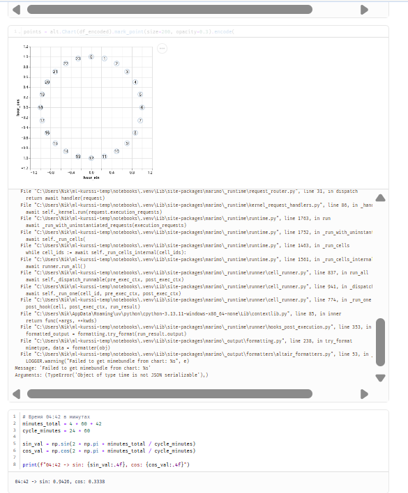
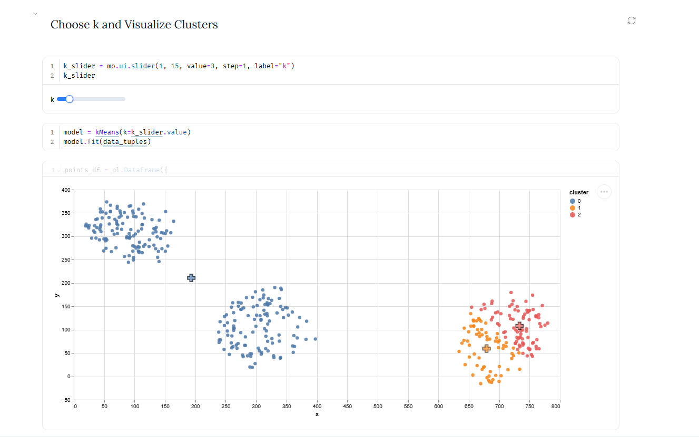
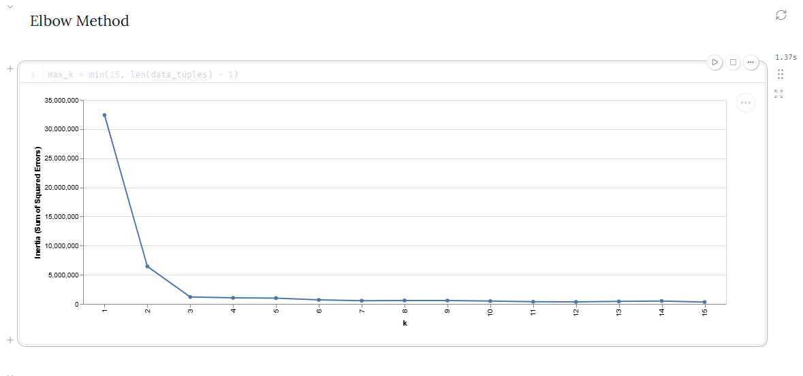
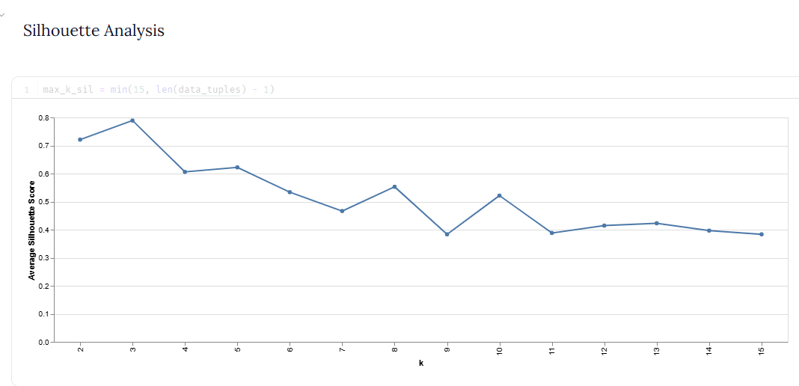
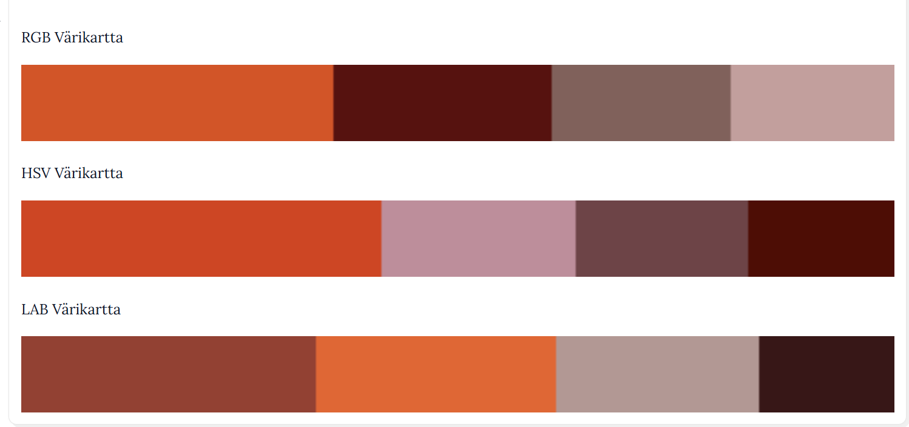

Viikko 42
Syklinen enkoodaus (Cyclical Encoding)
Tällä viikolla perehdyin syklisten piirteiden käsittelyyn koneoppimisessa. Esimerkiksi kellonaika, viikonpäivä ja kuukausi toistuvat syklissä.
Ongelma ja ratkaisu
Tavallisessa numeerisessa muodossa kellonajat 23:00 ja 01:00 ovat kaukana toisistaan ($|23 - 1| = 22$). Oikeasti eroa on kuitenkin vain kaksi tuntia. Tämä vääristää etäisyyteen perustuvia malleja, kuten k-Means-klusterointia.
Ongelma korjataan siirtämällä aika yksikköympyrälle sin- ja cos-funktioilla: - $x_{sin} = \sin(2\pi \cdot x / x_{max})$ - $x_{cos} = \cos(2\pi \cdot x / x_{max})$
Tällä tavalla 23:00 ja 00:00 pysyvät lähellä toisiaan myös matemaattisesti.

Havainnot
- Testasin koodia Marimo-muistiossa Polars- ja NumPy-kirjastoilla 24 tunnille.
- Laajensin koodin myös minuuttitasolle (klo 04:42). Kun syklin pituus on $24 \times 60 = 1440$ minuuttia, aika 04:42 (282 min) saa ympyrällä arvot $\sin \approx 0{,}94$ ja $\cos \approx 0{,}33$.
Tehtävä: k-Means from scratch
Tällä viikolla tutustuin ohjaamattomaan oppimiseen ja k-Means-klusterointiin. Tein harjoituksen Marimo-muistiossa, jossa koodasin algoritmin toiminnan itse alusta alkaen ilman Scikit-learnin valmista mallia.
1. Datan generointi ja klusterointi
Piirsin aluksi ScatterWidget-työkalulla kaksiulotteisen aineiston. Siihen tuli kolme selkeää pisteryhmää. Sen jälkeen ajoin oman k-Means-algoritmin ja piirsin tuloksen näkyviin.

Kuvasta näkee hyvin, miten algoritmi jakaa pisteet omiin väreihinsä. Se asettaa myös keskipisteet eli sentroidit tarkasti ryhmien keskelle.
2. Optimaalisen klusterimäärän (k) arviointi
Koska kyseessä on ohjaamaton oppiminen, aineistossa ei ole valmiita luokkia. Siksi testasin parhaan klusterimäärän löytämiseen kahta eri tapaa:
Kyynärpäämenetelmä (Elbow Method)
Laskin neliövirheiden summan (inertia) eri $k$-arvoilla väliltä 1–15.

Käyrässä näkyy selvä "kyynärpää" kohdassa $k = 3$. Tämän pisteen jälkeen virhe pienenee enää hyvin hitaasti. Se tarkoittaa, että lisäklusterit eivät enää paranna tulosta juurikaan.
Siluettianalyysi (Silhouette Analysis)
Laskin keskimääräisen siluettiarvon, jotta näin kuinka tiiviitä ja erillään ryhmät oikeasti ovat.

Siluettiarvo on korkeimmillaan (noin 0,79) juuri arvolla $k = 3$. Klusterit ovat siis selvästi erillään toisistaan ja ryhmät pysyvät tiiviinä.
Yhteenveto
Molemmat tavat – kyynärpäämenetelmä ja siluettianalyysi – antavat saman tuloksen. Luodulle datalle luonnollinen ja järkevin klusterimäärä on selvästi $k = 3$.
Tehtävä: Tikkurilan värikartta (511_color_swatch.py)
Tein hedelmäkuvasta (5 A Day, Terry Kearney) värikarttoja k-Means-klusteroinnilla eri väriavaruuksissa. Tavoitteena oli löytää kuvalle $k=4$ pääväriä. Samalla vertailin, mikä väriavaruus vastaa parhaiten sitä, miten ihmissilmä näkee värit.
Väriavaruuksien käsittely ja mallit
Opetin tehtävässä kolme erillistä k-Means-mallia:
- RGB: Klusteroin pikselit suoraan kanavien $[R, G, B]$ euklidisella etäisyydellä. Tämä on suoraviivainen tapa, mutta perus-RGB ei huomioi sitä, että ihmissilmä erottaa eri aallonpituuksia ja värejä eri tavalla.
- HSV (syklinen sini/kosini-enkoodaus): Värisävy eli Hue ($0..180$) toimii ympyrän muotoisesti. Muunsin sen siksi trigonometrisiksi koordinaateiksi: $$\text{Hue}{\sin} = \sin\left(2\pi \cdot \frac{H}{180}\right), \quad \text{Hue}\right)$$ Tämä poistaa keinotekoisen etäisyyshypyn punaisen sävyn päistä ($0^\circ \approx 360^\circ$). Klusteroin datan neljässä ulottuvuudessa: $[\text{Hue}} = \cos\left(2\pi \cdot \frac{H}{180{\sin}, \text{Hue}, S, V]$.
- CIELAB: LAB-väriavaruus on kehitetty vastaamaan ihmisen omaa näköaistia (perceptually uniform). Pisteiden välinen euklidinen etäisyys avaruudessa vastaa suoraan silmin havaittavaa värieroa.
Tulokset ja väripaletit
Jokaisen väripalkin leveys kertoo sen, kuinka suuri osuus pikseleistä kuuluu kyseiseen klusteriin:

Havainnot
- RGB ottaa mukaan herkästi tummia ja harmahtavia sävyjä. Silloin hedelmien kirkkaat päävärit jäävät vähän piiloon.
- HSV säilyttää puhtaat värisävyt huomattavasti paremmin, koska Hue-kulma koodattiin syklisesti.
- CIELAB tuotti omaan silmään kaikkein luonnollisimman ja tasapainoisimman paletin. Se erottelee kuvan tärkeimmät hedelmäsävyt (kuten oranssin ja viininpunaisen) parhaiten.